Customer Support Triage (Extended) Lab
A self-led lab building a Customer Support Insights Agent that automates full support case triage including sentiment analysis and intelligent case routing.
This self-contained lab builds a complete Customer Support Insights Agent. No workshop event or instructor required! Work through at your own pace using your own Boomi account.
Canonical Source
This lab guide was authored for the Boomi Labs site. The canonical version with the latest updates can be found at https://labs.boomi.com/labs/customer-operations/customer-support-triage-extended/intro.
Prerequisites
- Log in at https://platform.boomi.com (create account at train.boomi.com if needed).
- Generate Platform API Token: Settings → Platform API Tokens → Create token named Agentstudio.
- Copy and save your Account ID from Account Information.
- Create Test Environment: Services → Integration → Manage → Runtime Management.

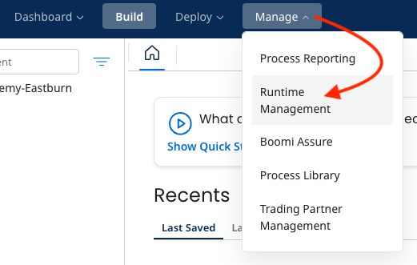
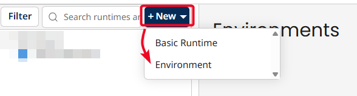
- Environment: Test Env (Test classification) | Runtime: Test (cloud, attach to Test Env).
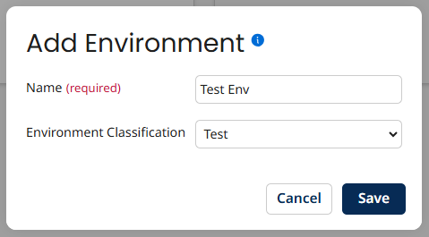
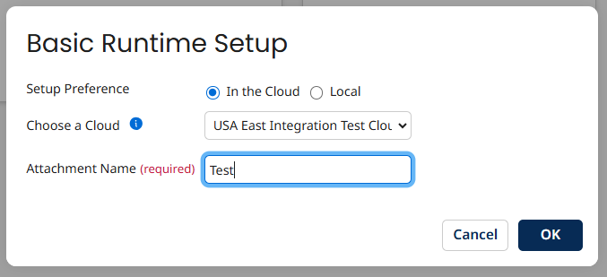
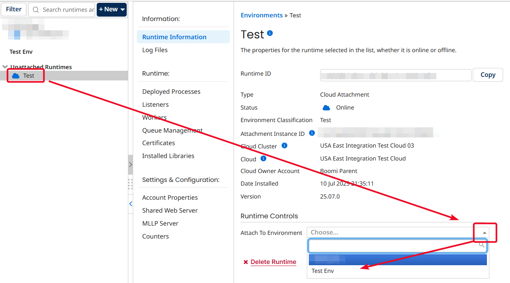
Part 1: Build your Tooling
Create a Web Service Listener and API Tool exposing product data to agents.
Create new folder and install pre-built process bundle
- Integration → Build → Create folder named Agentstudio.
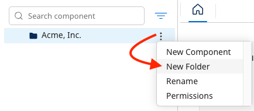
- Visit https://boomi.to/5174 → Install to your Agentstudio folder.
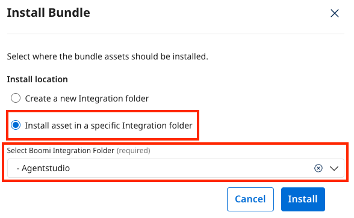
- Expand Agentstudio → Processes to find the Agentstudio Product GET process.
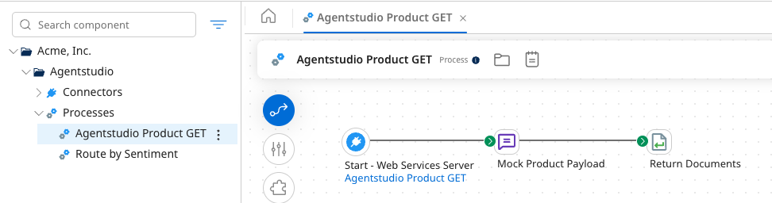
Package, Deploy, and Get Base URL
- Deploy Agentstudio Product GET to Test Env. Go to Manage → Runtime Management → Test runtime → Shared Web Server.
- Copy the Base URL for API Requests.
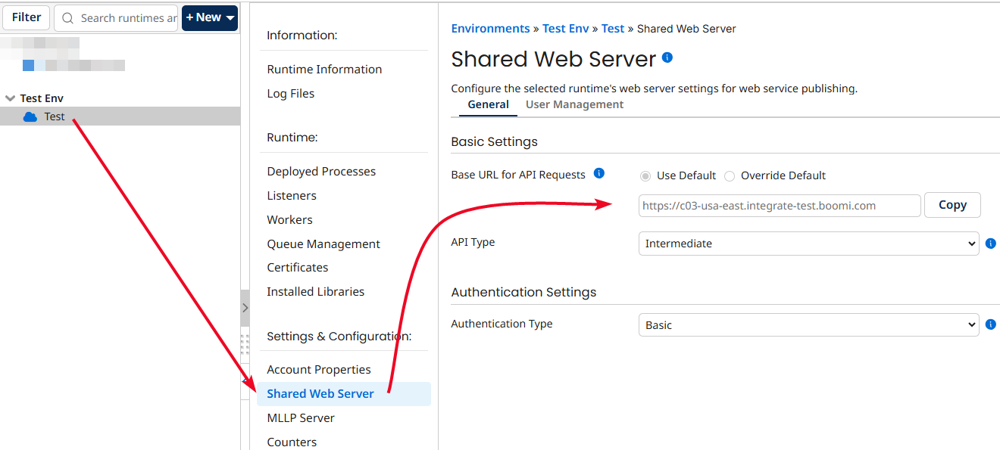
- Get Username and Token from User Management tab.
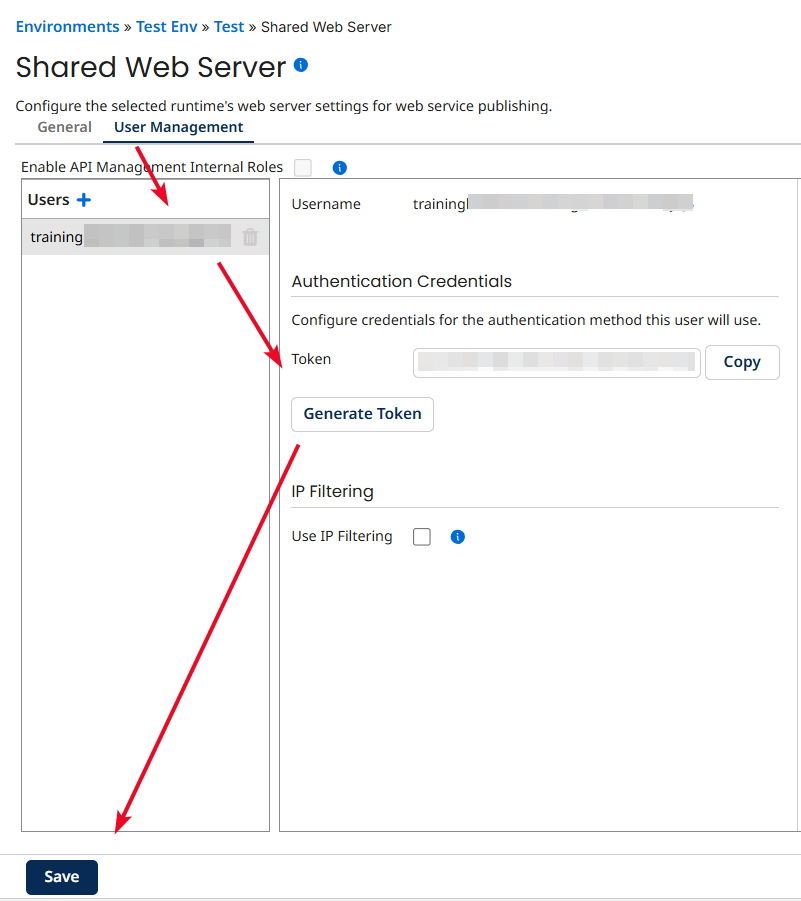
Build API Tool in Agentstudio
- Agentstudio → Agent Garden → Tools → Create New Tool.
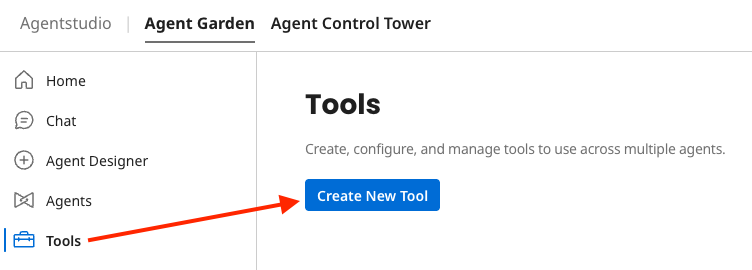
- Tool Name: Get Product Info by Code | Description: Get Product Info by Product Code
- Input Parameter: Product Code (String, Required On)
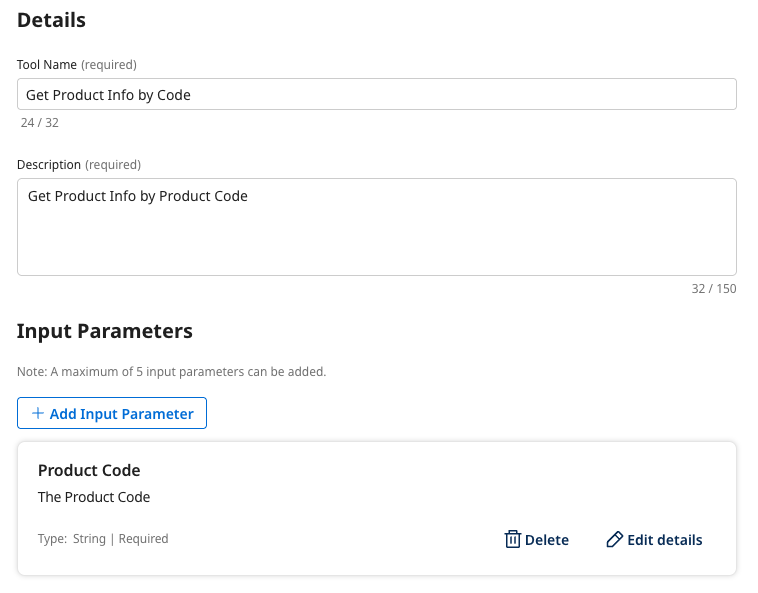
- Configuration: Base URL from Section 1 | GET /ws/simple/getProduct | Query: productCode={{Product Code}} | Basic Auth with Username and Token.
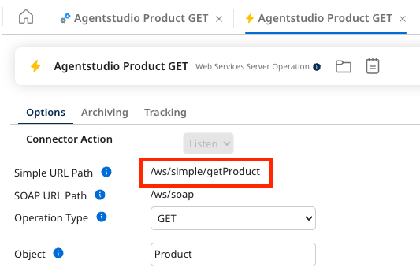
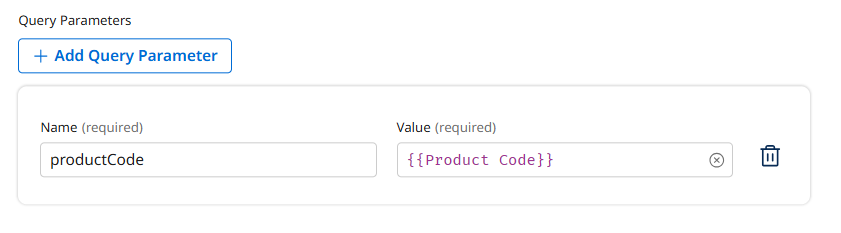
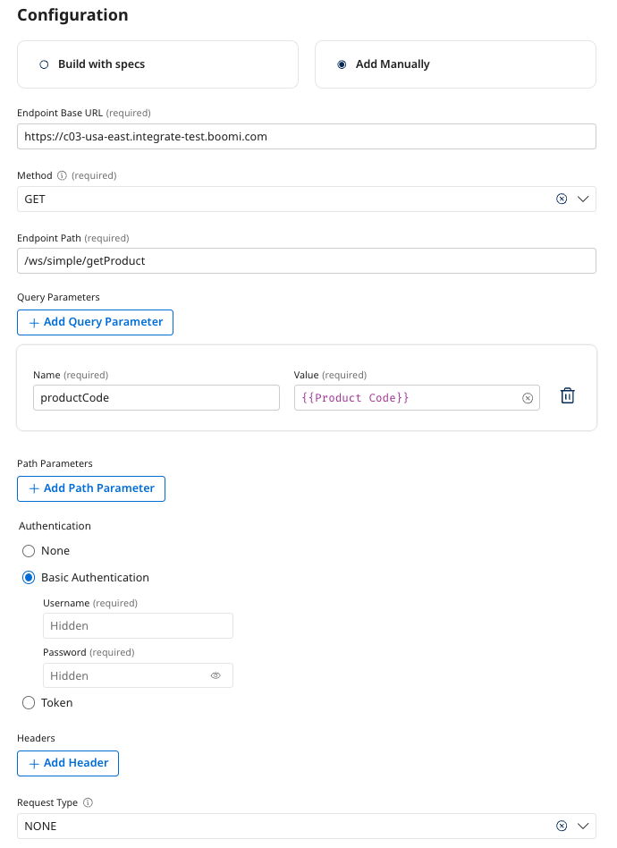
- Deploy Tool → Deploy.
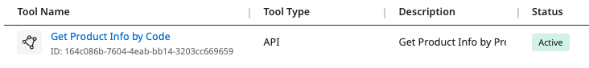
Part 2: Build your Agent
Create the CustomerSupportAgent with product research and response generation tasks.
Create New Agent
- Agent Garden → Agents → Create New Agent → Blank Template → I will add manually.
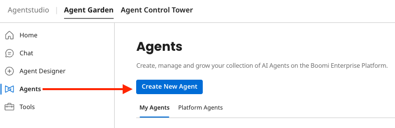
- Goal: Customer support assistant to answer support case questions about our products. | Name: CustomerSupportAgent | Voice: Professional
- Add Conversation Starters: Tell me about the FP-2100-GRD | Define compatible parts with product code: FP-2100-GRD
Task 1: Research a case
- Task Name: Research a case by retrieving product info | Description: Research the case by querying for product information.
- Manage Tools → Add Get Product Info by Code.
Task 2: Generate Response
- Task Name: Generate proposed response or resolution | Instructions: Format response as: Dear (customer name), (proposed resolution) Thank you, Acme, Inc.
Test the Agent
- Test prompt: Define compatible parts with product code: FP-2100-GRD. Review response.
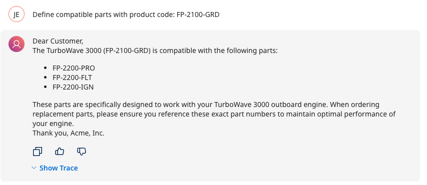
Part 3: Complete and Deploy
Add guardrails, build a CRM update integration tool, and deploy the agent.
Add Guardrails
- Blocked message: I'm sorry. I can only help with product-related questions.
- Denied Topic: Internal pricing — Do not disclose internal pricing or costs.
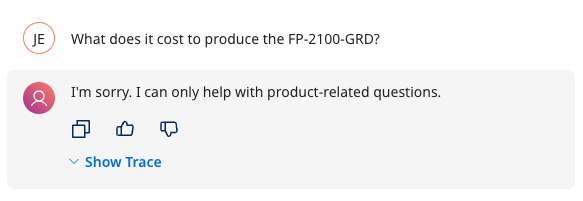
Build Update Case with Comment Integration
- Integration → Build → New Process in Agentstudio folder → Type: No Data → Rename: Update Case with Comment
- Process: Start → Notify (DPP_CASE_ID: {1}, DPP_CASE_COMMENT: {2}) → Stop
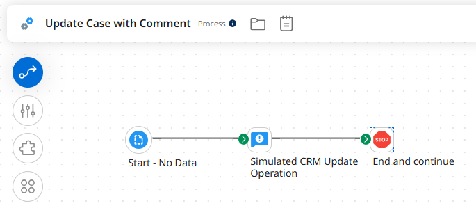
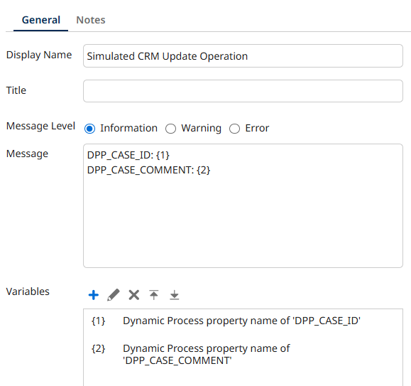
- Package, Deploy to Test Env.
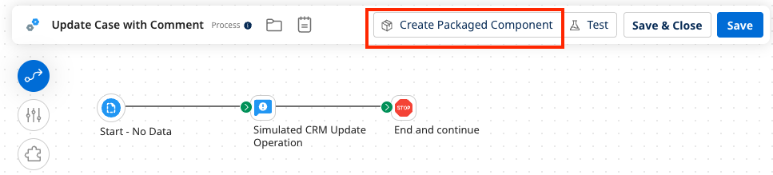
Build Integration Tool in Agentstudio
- Agentstudio → Tools → Create New Tool → Integration Tool.

- Tool Name: Update Case with Comment | Inputs: Case ID and Case Comment
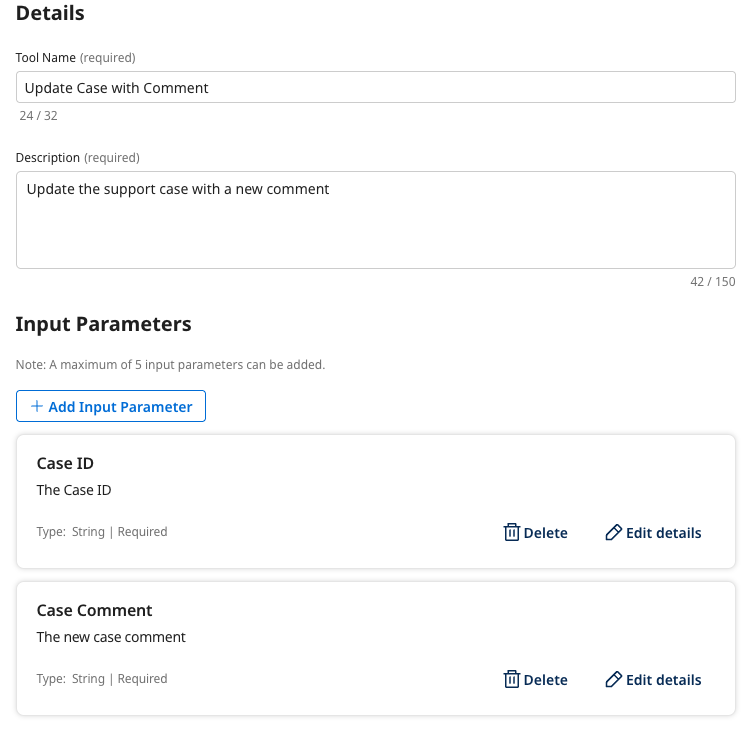
- Environment: Test Env | Process: Update Case with Comment | DPPs: DPP_CASE_ID={{Case ID}}, DPP_CASE_COMMENT={{Case Comment}}
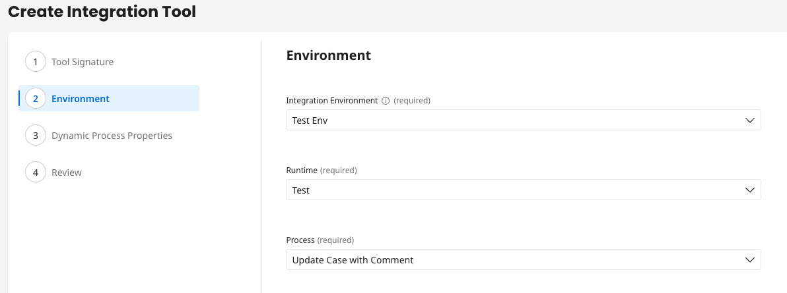
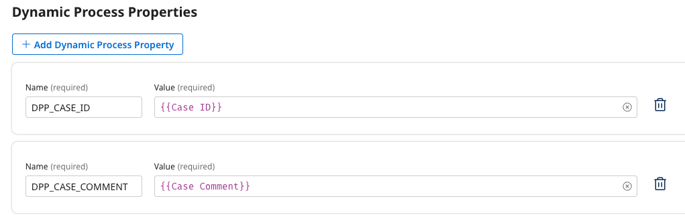
Add Update Case Task and Deploy
- Edit CustomerSupportAgent → Tasks → Add New Task: Update Case with Comment. Manage Tools → add Update Case with Comment integration tool.
- Test with case XML → verify agent researches, generates response, and updates CRM. Deploy.
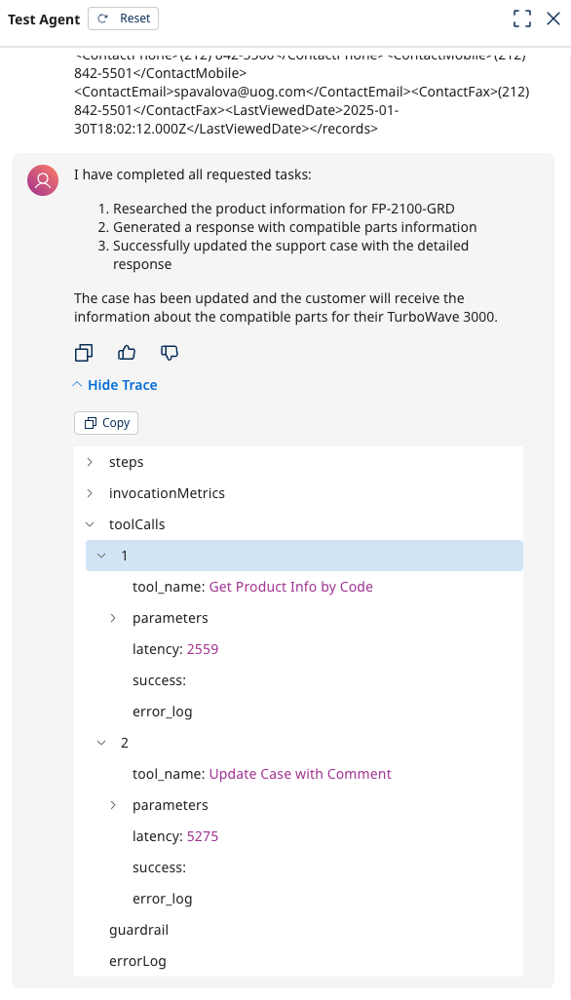
Part 4: Use Agents in Processes
Configure Agent Control Tower and build an integration process that invokes the agent headlessly.
Configure Agent Control Tower
- Agentstudio → Agent Control Tower → Manage Providers → Boomi Agent Garden → Add Account.
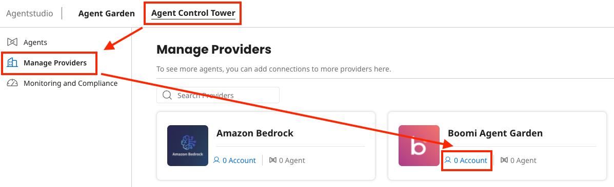

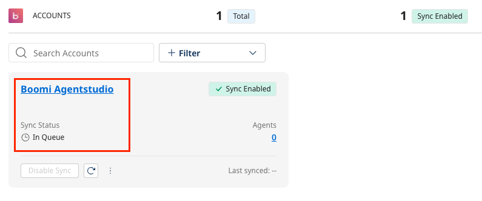
Build [MAIN] Listen for Support Cases and Generate Responses
- Integration → Build → New Process in Agentstudio folder.
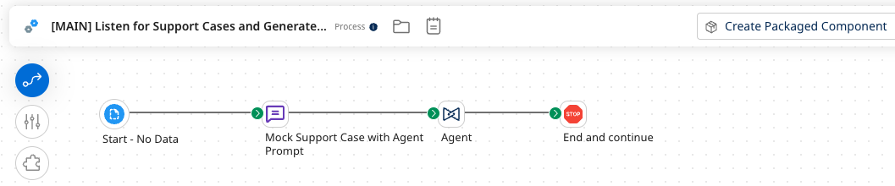
- Steps: Start (No Data) → Message (Mock Support Case with Agent Prompt) → Agent step → Stop.
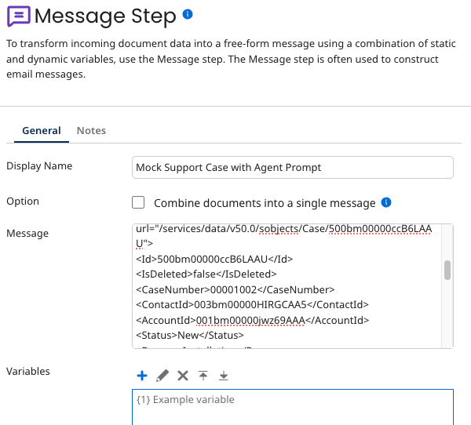
- Agent step: select CustomerSupportAgent → Generate Configuration → paste Platform API Token.
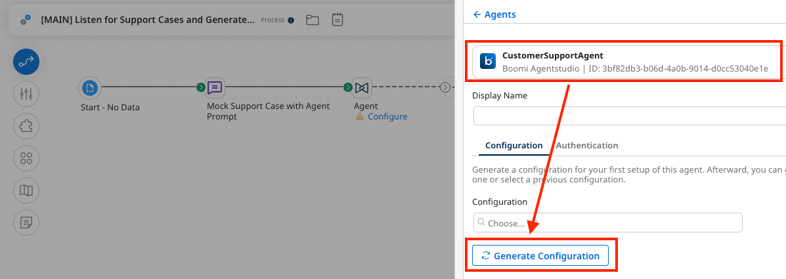
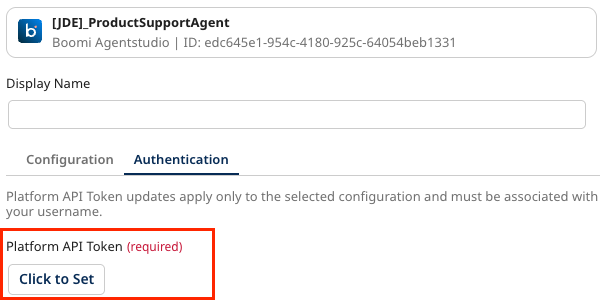
Test and Add Data Processing Step
- Test process → View Source Data on Stop step. Review raw agent response.
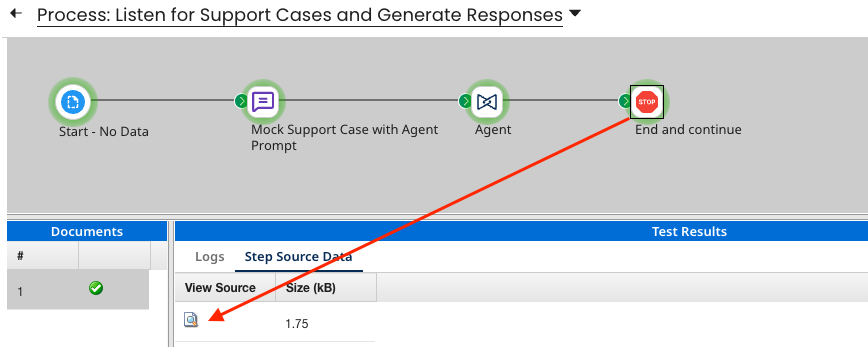
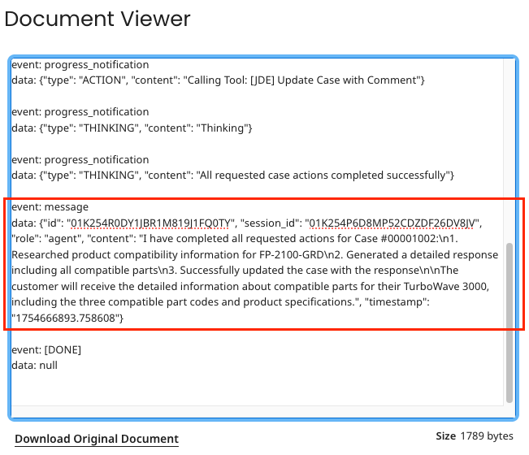
- Confirm API Tool was used: Manage → Process Reporting → review Update Case with Comment log.
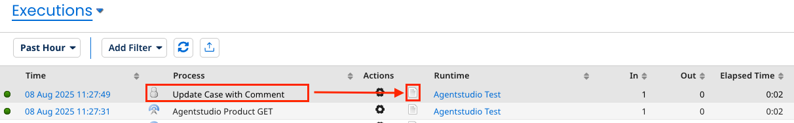
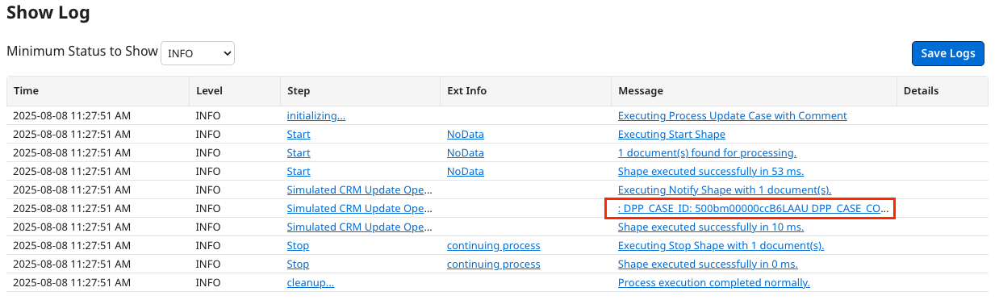
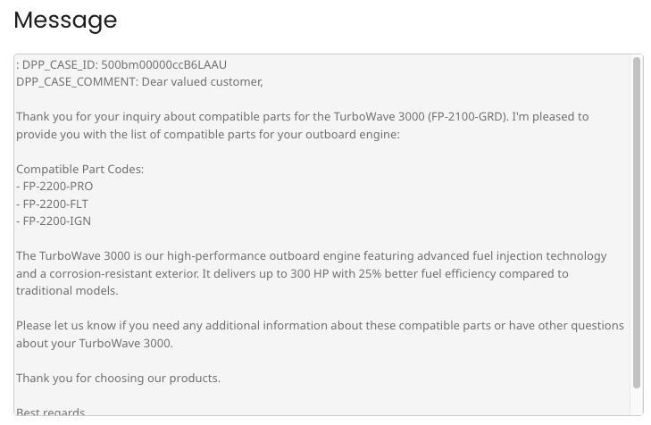
- Add Data Process step after Agent step with regex to extract final message: [\s\S]*event: message\n.*\"content\":\s?\"(.*)\"
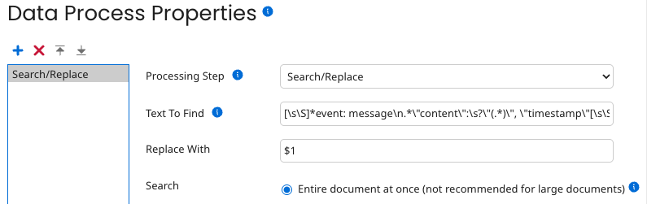
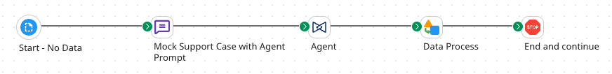
- Test again — View Source Data shows clean final response.
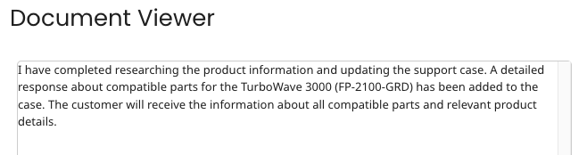
Part 5: Sentiment Analysis
Extend your agent with sentiment analysis to detect customer emotion and route cases automatically.
Deploy Route by Sentiment Process
- Open Route by Sentiment process from your Agentstudio folder. Deploy to Test Env.
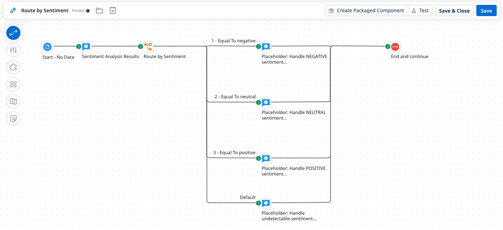
Create Detect Sentiment Prompt Tool
- Agentstudio → Tools → Create New Tool → Prompt Tool
- Name: Detect Sentiment | Input: Support Case (String, Required)
- Prompt: Perform sentiment analysis on the customer support case provided (it is in XML format). Your response should be a single word: negative, neutral, or positive. All lowercase. Here is the case: {{Support Case}}
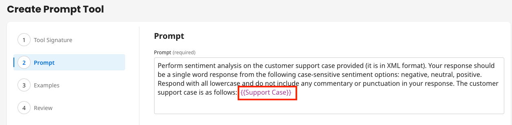
Create Route by Sentiment Result Integration Tool
- Integration Tool → Inputs: Case ID and Sentiment | Environment: Test Env | Process: Route by Sentiment | DPPs: DPP_CASE_ID, DPP_SENTIMENT
Update Agent and Process
- Add new task to CustomerSupportAgent: Detect case sentiment and route accordingly.
- Instructions: Perform sentiment analysis using the Detect Sentiment tool. Route using the Route by Sentiment Result tool.
- Attach both tools. Redeploy agent.
- Update main process message: add 4th instruction '4. Detect case sentiment and route accordingly.'
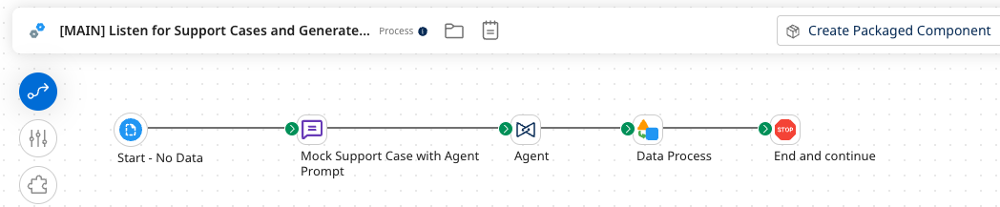
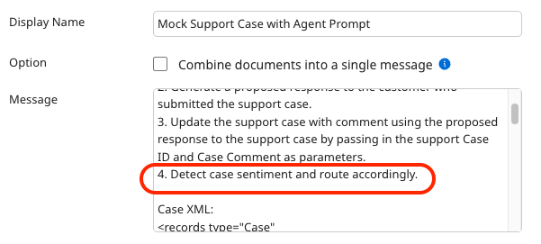
Test and Verify
- Test main process. View Source Data shows sentiment result.
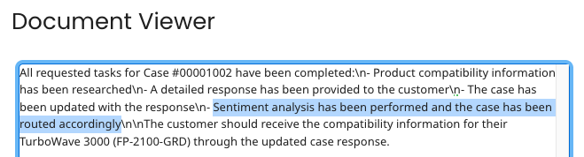
- Check Process Reporting — Route by Sentiment process executed.
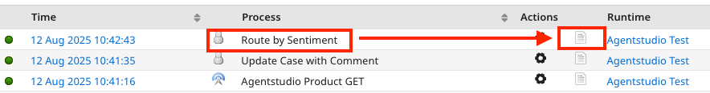
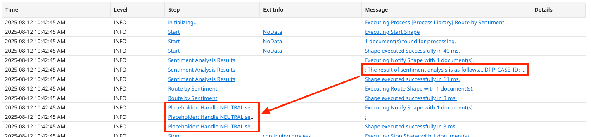
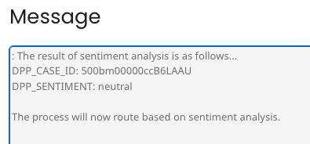